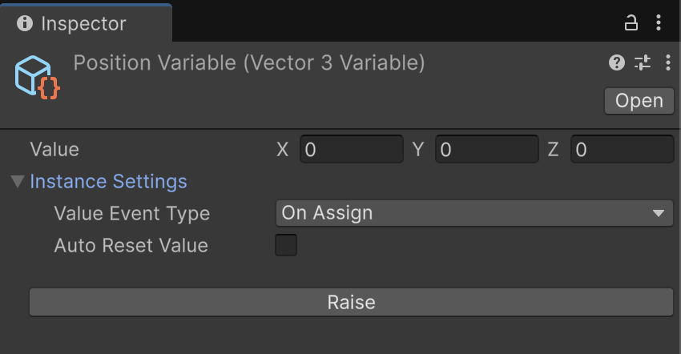
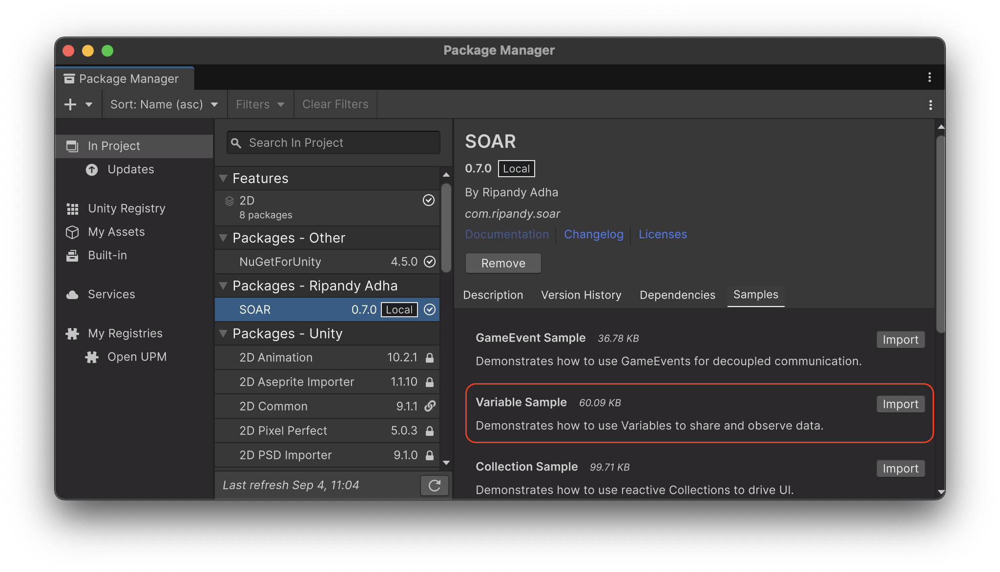

Variable¶
The Variable<T> class in SOAR represents a data container stored in a ScriptableObject.
It extends the GameEvent<T> system, meaning that whenever the Value of a Variable<T> changes, it also raises an event, notifying all subscribers of the new value.
This makes Variable<T> a powerful tool for creating reactive data that can be easily shared and observed throughout application.
Variable<T> inherits from GameEvent<T> with Raise and Subscribe event features, and thus from SoarCore, gaining lifecycle management features.
Variable<T>¶
The generic Variable<T> class is the base for all variable types. It holds a value of type T and provides mechanisms to access, modify, and observe this value.

-
Value Property: The primary way to interact with a
Variable<T>is through itsValueproperty. Assigning a new value to theValueproperty will trigger theRaise(T)method, which in turn notifies subscribers. -
Value Event Type: The
valueEventTypefield (configurable in the Inspector) determines when the value change event is raised:OnAssign: The event is raised every time theValueproperty is set, even if the new value is the same as the old one.OnChange: The event is raised only if the new value is different from the current value. This is checked by theIsValueEquals(T)method.
-
Subscribing to Changes: Since
Variable<T>inherits fromGameEvent<T>, subscription to value changes can be done by using the sameSubscribemethods:Subscribe(Action<T> action): Receives the new value.Subscribe(Action<T, T> action): Receives both the old and new value. This is specific toVariable<T>.Subscribe(Action<PairwiseValue<T>> action): Receives aPairwiseValue<T>struct containing both old and new values. This is also specific toVariable<T>.
-
Initial Value and Reset:
- The
InitialValueproperty stores the value of the variable at initialization time (e.g., when the game starts or the editor compiles). - The
ResetValue()method allows reverting the variable'sValueback to itsInitialValue.
- The
-
Auto Reset Value: The
autoResetValueboolean field (configurable in the Inspector) determines if theVariable<T>should automatically callResetValue()when play mode ends. This is useful for ensuring variables return to a known state after testing.
Serialization and Deep Copy
For autoResetValue to work with complex class types, SOAR performs a "deep copy" by serializing the initial value to a JSON string. This has two important implications:
1. Performance: This serialization can create garbage and CPU overhead, especially at startup. For performance-critical variables, it's better to use structs or primitive types, which are copied by value and avoid this process.
2. Compatibility: This method does not work for all types, especially Unity engine types like Transform or GameObject. Resetting these types requires manual handling.
Creating a Variable¶
SOAR provides several pre-defined Variable types for common Unity and C# types (e.g., IntVariable, FloatVariable, StringVariable, Vector3Variable). These can be created from the Assets > Create > SOAR > Variables menu.
Assembly Definition Reference
These common types are defined within Soar.Base.asmdef assembly definition files, which different from SOAR's core classes Soar.asmdef assembly definition files. Make sure Soar.Base.asmdef reference was added to the asmdef that requires it.
To create a variable for a custom data type:
-
Define a custom data structure. In order to make the data viewable and modifiable in the Inspector, it is a necessity to set it as
[Serializable]. -
Create a new class that inherits from
Variable<T>, specifying the custom type. -
Instances of
MyCustomDataVariablecan now be created from theAssets > Create > SOAR > Variables > My Custom Data Variablemenu.
Accessing and Modifying Value¶
The Value of a variable can be accessed from Value getter (property). Using the same property, a value of a variable can be set from Value setter (property). Modifying the value will Raise value-changed event.
// File: VariableUserExample.cs
using Soar.Variables;
using UnityEngine;
public class VariableUserExample : MonoBehaviour
{
[SerializeField] private IntVariable scoreVariable;
void Start()
{
Debug.Log($"Initial Score: {scoreVariable.Value}");
}
public void AddScore(int amount)
{
scoreVariable.Value += amount;
}
}
Subscribing to Value Changes¶
Changes in a Variable<T> can be observed by establishing a subscription to it. This mechanism is analogous to subscribing to a GameEvent<T>. Upon a change in the Value of the Variable<T>, all subscribed actions are invoked. To prevent memory leaks and unintended behavior, the subscription should be disposed of when it is no longer required, commonly within OnDisable or OnDestroy.
// File: ScoreDisplay.cs
using System;
using Soar.Variables;
using UnityEngine;
using UnityEngine.UI;
public class ScoreDisplay : MonoBehaviour
{
[SerializeField] private IntVariable scoreVariable;
[SerializeField] private Text scoreText;
private IDisposable scoreSubscription;
private void Start()
{
// Subscribe to receive the new value
scoreSubscription = scoreVariable.Subscribe(UpdateScoreText);
// Optionally, subscribe to receive old and new values
// scoreSubscription = scoreVariable.Subscribe(HandleScoreChangeDetailed);
UpdateScoreText(scoreVariable.Value); // Update text with initial value
}
private void OnDestroy()
{
scoreSubscription?.Dispose();
}
private void UpdateScoreText(int newScore)
{
if (scoreText != null)
{
scoreText.text = $"Score: {newScore}";
}
}
// Example for old/new value subscription
private void HandleScoreChangeDetailed(int oldValue, int newValue)
{
Debug.Log($"Score changed from {oldValue} to {newValue}");
UpdateScoreText(newValue);
}
}
JsonableVariable<T>¶
For variables that need to be serialized to or deserialized from JSON, SOAR provides the JsonableVariable<T> base class. This class implements the IJsonable interface.
-
ToJsonString(): Converts the variable's currentValueinto a JSON string. -
Primitive types are wrapped in a
JsonableWrapper<T>(e.g.,{"value": 10}) for robust serialization. - Complex types are serialized directly.
-
Uses
JsonUtility.ToJson, with pretty print enabled in the Unity Editor. -
FromJsonString(string jsonString): Parses a JSON string and updates the variable'sValue. -
Handles unwrapping for both primitive and complex types.
custom jsonable variables can be created similarly to regular variables, but by inheriting from JsonableVariable<T>:
// File: MyJsonableDataVariable.cs
using Soar.Variables;
using UnityEngine;
// Assuming MyCustomData is [Serializable]
[CreateAssetMenu(fileName = "MyJsonableDataVariable", menuName = "SOAR/Jsonable Variables/My Jsonable Data Variable")]
public class MyJsonableDataVariable : JsonableVariable<MyCustomData> { }
The JsonableExtensions class provides helper methods like SaveToJson and LoadFromJson to easily save/load IJsonable objects to/from files.
Editor Integration¶
Variable<T> and JsonableVariable<T> assets have custom editor inspectors to enhance usability.
Variable<T> Inspector (VariableEditor)¶
- Value Display: The current
Valueof the variable is displayed. IfTis a complex serializable type, its fields are shown. - Raise Button: Inherited from
GameEventEditor, this button callsRaise(Value)on the variable, useful for testing listeners. - Instance Settings:
Value Event Type: Dropdown to selectValueAssignorValueChanged.Auto Reset Value: Checkbox to enable/disable automatic value reset on exiting play mode.
JsonableVariable<T> Inspector (JsonableVariableEditor)¶
Inherits all features from the Variable<T> inspector and adds:
- Json File Management: A foldout section for saving and loading the variable's data to/from a JSON file.
- Json Path Type: Choose between
Application.dataPath,Application.persistentDataPath, or a custom path. - File Name: Specify the JSON file name. Can default to
[VariableName].json. - Save to Json Button: Saves the current variable
Valueto the specified JSON file. - Load from Json Button: Loads the
Valuefrom the specified JSON file into the variable.
Lifecycle and Disposal¶
Being derived from GameEvent<T> and SoarCore, Variable<T> instances:
- Are
ScriptableObjects and implementIDisposable. - Participate in SOAR's initialization and cleanup lifecycle, including handling for editor play mode state changes and domain reloads.
- The
valuefield of aGameEvent<T>(and thusVariable<T>) is reset todefault(T)when the application quits or when domain reload is disabled and play mode is exited, as part ofGameEvent<T>.ResetInternal(). TheautoResetValuefeature inVariable<T>controls whetherInitialValueis restored.
Sample Usage¶
To test this feature, the relevant sample package can be imported from the Package Manager window.

The Variable Sample demonstrates how multiple components can react to changes in shared FloatVariable assets that represent a character's health. It includes components for damaging, healing, and upgrading health, all of which interact with the same data assets without being directly aware of each other.
For detailed setup and usage instructions, please refer to the README.md file inside the VariableSamples folder after importing.
Special Variables¶
CameraVariable¶
The CameraVariable has a fallbackType field that allows it to fallback to Camera.main or Camera.current if the value is null. This is useful for ensuring that you always have a valid camera reference.
BoolVariable¶
The BoolVariable has a ToggleValue() method that sets the value to the opposite of the current value.
Value Objects¶
PairwiseValue<T>¶
A struct that holds both the old and new value of a variable. This is used in the Subscribe method of a Variable<T>.